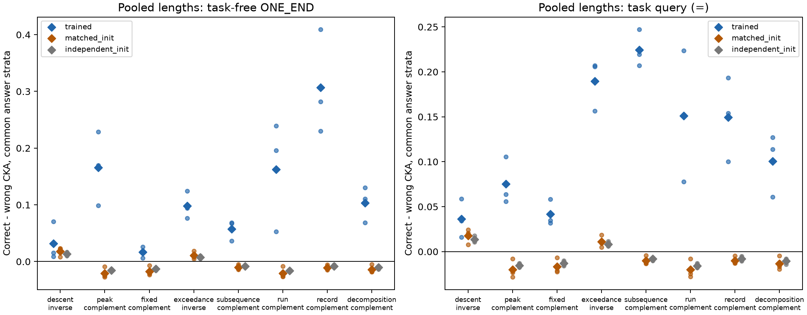
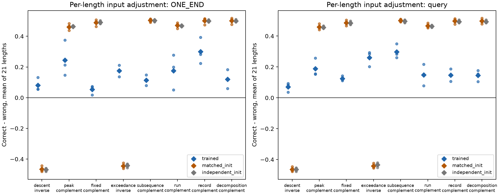
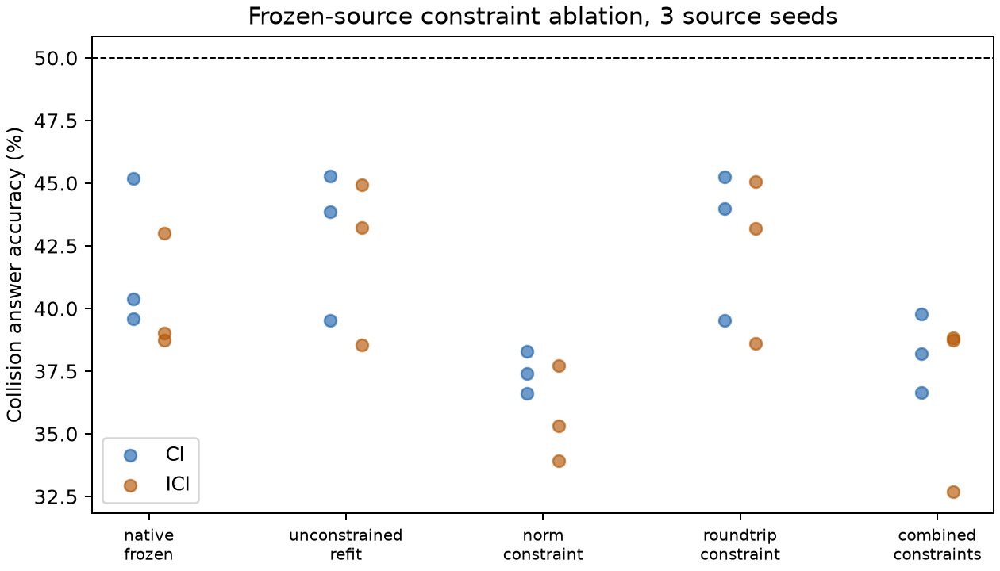

原始 CKA 现象复现，但初始化与逐长度控制揭示了关键边界。八条关系、三个种子，48 个已有单性质检查点；没有重新训练源模型。混合长度的正确变换优势为 24/24 正值，答案匹配后仍然如此；然而逐长度分别计算后，训练模型仅有 6/24 个答案匹配单元超过初始化，全部来自两条取逆关系。六条补排列关系在随机网络中也有更强的对齐，不能统一解释为训练学会了关系。
主要量为 ΔCKA = CKA(正确变换) − CKA(原协议错误变换)。错误对照保持原来的选择：取逆关系对照补排列，补排列关系对照取逆；未变换输入另行报告。条件与权重相同，只改变数学对齐。
核心比较规则于 2026-10-06T23:20:30.428585+00:00 保存，早于新数据、表征与 CKA。新的 2,688 个测试锚点，另有 672 FIT 和 336 验证锚点。已扫描原始 1,600 万条父数据输入；候选的全部八个轨道状态均排除原始数据及此前本地输入。输入读取器在初次注册后、任何数据选择和模型推断之前修正了紧凑 JSON 格式；失败注册保留，随后重新保存协议。
共同分层键为长度、左侧未变换答案、右侧 e/C/I 三个答案；保留至少三个锚点的分层，各分支在同一分层内减均值。所有条件使用完全相同的保留行。确定性真实答案编码在每个分层中变成常量，所以条件 CKA 未定义。最后一列是另行补充的逐长度输入调整均值，不能与 pooled CKA 当作同一统计量直接相减。
| 关系 | 匹配锚点 | 原始 ONE_END Δ 均值 | 混合长度答案匹配 Δ：17 / 42 / 101 | 混合长度相对初始化增量 | 匹配后输出 Δ 均值 | 逐长度输入调整 Δ | 逐长度调整相对初始化增量 |
|---|---|---|---|---|---|---|---|
| 下降数—逆下降数（取逆） | 2249 | +0.3003 | +0.0708 / +0.0091 / +0.0157 | +0.0141 | +0.0001 | +0.0807 | +0.5469 |
| 峰—谷（补排列） | 1999 | +0.3276 | +0.0988 / +0.1696 / +0.2286 | +0.1861 | +0.0196 | +0.2451 | -0.2157 |
| 不动点—反不动点（补排列） | 2507 | +0.2589 | +0.0259 / +0.0170 / +0.0065 | +0.0339 | +0.0031 | +0.0533 | -0.4355 |
| 超越数—不足数（取逆） | 1347 | +0.7252 | +0.0767 / +0.0941 / +0.1243 | +0.0877 | +0.0117 | +0.1755 | +0.6200 |
| LIS—LDS（补排列） | 2408 | +0.3837 | +0.0686 / +0.0362 / +0.0674 | +0.0677 | +0.1421 | +0.1133 | -0.3913 |
| 递增段—递减段（补排列） | 2122 | +0.9176 | +0.0527 / +0.2396 / +0.1958 | +0.1830 | -0.0003 | +0.1759 | -0.2946 |
| 左向最大记录—最小记录（补排列） | 2245 | +0.3449 | +0.2299 / +0.4094 / +0.2819 | +0.3177 | +0.0187 | +0.3001 | -0.2006 |
| 全局下降—分解块（补排列） | 2656 | +0.2590 | +0.0688 / +0.1106 / +0.1303 | +0.1171 | +0.0012 | +0.1205 | -0.3805 |

下载 PDF 图 · 逐关系 × 种子 CSV · 所有分支与控制对照 · 三个变换的 CKA 原值
| 关系 | 种子 | ONE_END 原始 Δ | 长度中心化 Δ | 答案匹配 Δ | 查询匹配 Δ | 输出匹配 Δ | 同种子初始化匹配 Δ |
|---|---|---|---|---|---|---|---|
| 下降数—逆下降数（取逆） | 17 | +0.5204 | +0.5225 | +0.0708 | +0.0588 | -0.0016 | +0.0223 |
| 下降数—逆下降数（取逆） | 42 | +0.0585 | +0.0473 | +0.0091 | +0.0342 | -0.0001 | +0.0079 |
| 下降数—逆下降数（取逆） | 101 | +0.3220 | +0.3267 | +0.0157 | +0.0161 | +0.0020 | +0.0232 |
| 峰—谷（补排列） | 17 | +0.2839 | +0.3234 | +0.0988 | +0.0558 | -0.0019 | -0.0250 |
| 峰—谷（补排列） | 42 | +0.2507 | +0.3298 | +0.1696 | +0.0638 | -0.0003 | -0.0088 |
| 峰—谷（补排列） | 101 | +0.4483 | +0.5943 | +0.2286 | +0.1057 | +0.0609 | -0.0275 |
| 不动点—反不动点（补排列） | 17 | +0.1766 | +0.2126 | +0.0259 | +0.0348 | +0.0007 | -0.0236 |
| 不动点—反不动点（补排列） | 42 | +0.4453 | +0.4514 | +0.0170 | +0.0318 | +0.0080 | -0.0072 |
| 不动点—反不动点（补排列） | 101 | +0.1546 | +0.1674 | +0.0065 | +0.0583 | +0.0006 | -0.0213 |
| 超越数—不足数（取逆） | 17 | +0.7545 | +0.8145 | +0.0767 | +0.1564 | +0.0047 | +0.0185 |
| 超越数—不足数（取逆） | 42 | +0.7549 | +0.7986 | +0.0941 | +0.2069 | +0.0304 | +0.0050 |
| 超越数—不足数（取逆） | 101 | +0.6662 | +0.7426 | +0.1243 | +0.2059 | -0.0000 | +0.0086 |
| LIS—LDS（补排列） | 17 | +0.1858 | +0.1504 | +0.0686 | +0.2194 | +0.1458 | -0.0140 |
| LIS—LDS（补排列） | 42 | +0.3999 | +0.3745 | +0.0362 | +0.2072 | +0.1276 | -0.0047 |
| LIS—LDS（补排列） | 101 | +0.5655 | +0.5450 | +0.0674 | +0.2473 | +0.1529 | -0.0123 |
| 递增段—递减段（补排列） | 17 | +0.9695 | +0.9714 | +0.0527 | +0.0777 | +0.0002 | -0.0265 |
| 递增段—递减段（补排列） | 42 | +0.8714 | +0.8847 | +0.2396 | +0.1524 | +0.0024 | -0.0085 |
| 递增段—递减段（补排列） | 101 | +0.9120 | +0.9124 | +0.1958 | +0.2236 | -0.0035 | -0.0261 |
| 左向最大记录—最小记录（补排列） | 17 | +0.3261 | +0.3237 | +0.2299 | +0.1003 | +0.0092 | -0.0147 |
| 左向最大记录—最小记录（补排列） | 42 | +0.3451 | +0.3356 | +0.4094 | +0.1933 | +0.0007 | -0.0057 |
| 左向最大记录—最小记录（补排列） | 101 | +0.3636 | +0.3609 | +0.2819 | +0.1541 | +0.0463 | -0.0113 |
| 全局下降—分解块（补排列） | 17 | +0.3974 | +0.4096 | +0.0688 | +0.1138 | +0.0002 | -0.0184 |
| 全局下降—分解块（补排列） | 42 | +0.1869 | +0.1810 | +0.1106 | +0.0608 | +0.0019 | -0.0052 |
| 全局下降—分解块（补排列） | 101 | +0.1928 | +0.1911 | +0.1303 | +0.1272 | +0.0014 | -0.0180 |
| 分支 | 控制 | Δ 均值 | 正值单元 |
|---|---|---|---|
| 任务前 ONE_END | 原始 | +0.4397 | 24/24 |
| 任务前 ONE_END | 长度中心化 | +0.4571 | 24/24 |
| 任务前 ONE_END | 共同答案分层 | +0.1178 | 24/24 |
| 任务前 ONE_END | FIT 置信度回归 | +0.3589 | 24/24 |
| 查询位置 | 原始 | +0.7424 | 24/24 |
| 查询位置 | 长度中心化 | +0.7813 | 24/24 |
| 查询位置 | 共同答案分层 | +0.1211 | 24/24 |
| 查询位置 | FIT 置信度回归 | +0.6521 | 24/24 |
| 31 类数值输出 | 原始 | +0.8457 | 24/24 |
| 31 类数值输出 | 长度中心化 | +0.8713 | 24/24 |
| 31 类数值输出 | 共同答案分层 | +0.0245 | 18/24 |
| 真实答案 onehot | 原始 | +0.9602 | 24/24 |
| 真实答案 onehot | 长度中心化 | +0.9937 | 24/24 |
| 真实答案 onehot | 共同答案分层 | 未定义 | 常量，CKA 未定义 |
混合长度的任务前表征在答案匹配后平均 Δ 为 0.1178，其中 23/24 高于同种子初始化；独立种子初始化对照也为 23/24。训练模型的 24/24 个条件对照都高于事先固定的 32 个组内打乱对照。打乱保留真实答案与分层，却破坏具体输入对应。这说明信号不只是确定性真实答案编码，但尚不能区分训练得到的关系结构与输入对应的自然几何。下方逐长度控制改变了初始化比较的结论。这些单元共享任务、输入与种子，不能当成 24 个独立试验。
真实答案与模型输出分布本身能复现很大的原始正确变换优势。因此原始 CKA 不能直接证明内部代数机制。输出条件几何仍可能包含置信度与其他信息，隐藏 Δ 高于输出 Δ 也不是输出独立性的证明。固定 FIT-only 置信度回归是补充分析，不能作为因果中介分解。原始与匹配分析的样本集合及中心化方式不同，其下降幅度不能直接解释为答案解释了多少比例。
输入编码基线显示 CKA 对编码选择敏感，例如长度中心化的数值位置输入对补排列 CKA=1，而置换矩阵编码对取逆 CKA=1。这也是加入初始化与组内打乱控制的原因。完整输入基线见 CSV。
另在每个长度上使用位置置换矩阵的线性输入核。该输入 Gram 在 e/C/I 下严格相同，包括共同答案中心化之后。按 Cui 等 2022 的回归与 PSD 投影思路去除这一输入核，然后分别报告每个长度与三个种子。此补充方案在查看核心 CKA 与输入基线后、计算新调整结果前保存，采用已中心化的核；不声称复现论文全部预处理，也不声称排除了所有输入混淆。
共同答案条件下，任务前输入调整 Δ 的逐长度均值为 0.1580，正值 24/24；详见 逐关系种子、逐长度原值、补充协议。
| 位置 | 答案匹配后的统计方式 | 训练 Δ 均值 | 同种子初始化 Δ | 独立初始化 Δ | 训练相对同种子初始化增量 | 增量正值 |
|---|---|---|---|---|---|---|
| 任务前 ONE_END | 逐长度普通 CKA | +0.1635 | +0.2728 | +0.2729 | -0.1093 | 6/24 |
| 任务前 ONE_END | 逐长度输入调整 CKA | +0.1580 | +0.2520 | +0.2515 | -0.0939 | 6/24 |
| 查询位置 | 逐长度普通 CKA | +0.1789 | +0.2714 | +0.2703 | -0.0925 | 6/24 |
| 查询位置 | 逐长度输入调整 CKA | +0.1726 | +0.2504 | +0.2485 | -0.0777 | 6/24 |

逐长度的普通 CKA 与输入调整 CKA 都只有 6/24 高于初始化。这六个单元恰好是下降数—逆下降数和超越数—不足数两条取逆关系的三个种子；六条补排列关系则都低于初始化。独立初始化对照给出同样的 6/24。变化主要来自按长度分别计算再平均，而不是核回归本身：先减去长度均值、再把所有长度汇总为一项 CKA，并不等于对每个长度的 CKA 求平均。因此不能只报告混合长度的 23/24，再概括成普遍训练收益。取逆关系值得继续追踪，但仍需同一变换下的无关任务对照和更完整的输出控制来证明任务关系特异性。
另用三个已指定的新源种子 8111/9127/10141，冻结同一模型与原数值读出。拟合仅使用 e↔C 与 e↔I 已知边；超参数仅按可见状态验证误差选择，400 次固定更新。新碰撞测试含 1,344 对；每对三个已知答案相同，CI/ICI 隐藏答案不同。算子施加范数约束、仿射往返约束或两者联合；同时报告原始算子和同预算无约束重拟合，避免把额外优化预算误判为约束收益。借鉴 Azencot 等 2020 一致性思想，但这里直接约束 C/I 的自反关系，没有训练 Koopman 自编码器。
| 方法 | CI 准确率 | ICI 准确率 | CI 双正确 | ICI 双正确 |
|---|---|---|---|---|
| native_frozen | 41.72% | 40.25% | 14.93% | 13.05% |
| unconstrained_refit | 42.88% | 42.24% | 16.29% | 15.28% |
| norm_constraint | 37.43% | 35.65% | 10.19% | 8.73% |
| roundtrip_constraint | 42.91% | 42.29% | 16.32% | 15.30% |
| combined_constraints | 38.21% | 36.76% | 11.95% | 10.09% |

双正确指碰撞对的两个输入都正确；CI/ICI 是分别计分的两个计算路径，不是双正确的两个成员。50% 标线只适用于此碰撞选择下的确定性已知标量答案预测器，不是神经网络的信息上限。往返约束相对相同预算无约束重拟合仅有极小增量；范数与联合约束在这组固定选择规则下变差。结论限于提供已知结构约束后的组合泛化。
所有种子 × 方法 × CI/ICI · 消融协议 · PDF 图
原始源任务的学习程度不同，尤其 peaks 与 recoils 的长排列准确率偏低；本轮全部保留，没有按新结果筛选。各任务平均数是已提取变换条件与种子的描述汇总，并非平衡的同等学习程度对照。逐任务与条件准确率见 CSV。
| 源任务 | 平均数值准确率 | 最低条件 | 最高条件 |
|---|---|---|---|
| anti_fixed_points | 91.70% | 82.81% | 99.67% |
| components | 99.90% | 99.85% | 99.93% |
| deficiencies | 99.97% | 99.93% | 100.00% |
| descents | 99.90% | 99.89% | 99.93% |
| exceedances | 99.99% | 99.96% | 100.00% |
| fixed_points | 99.99% | 99.96% | 100.00% |
| global_descents | 99.86% | 99.81% | 99.93% |
| lds_length | 93.05% | 91.44% | 94.27% |
| left_to_right_maxima | 99.94% | 99.89% | 99.96% |
| left_to_right_minima | 99.90% | 99.81% | 99.96% |
| lis_length | 96.55% | 96.39% | 96.84% |
| longest_decreasing_run | 99.89% | 99.70% | 100.00% |
| longest_increasing_run | 99.88% | 99.78% | 99.93% |
| peaks | 74.50% | 69.83% | 82.89% |
| recoils | 68.07% | 56.85% | 74.96% |
| valleys | 95.37% | 89.36% | 99.14% |
已按独立样本 Gram 公式核验 1,944 个核心 CKA 原值；原始前向抽查所有前缀层和数值输出；消融 30 个端点、全部 48 个候选可见验证分数及冻结读出单独复核。核验数量代表覆盖面，不是独立效应复现。CKA 核验 · 原始前向对照 · 消融核验 · 输入调整核验 · 机器可读汇总 · 核心协议 · 完成与哈希记录